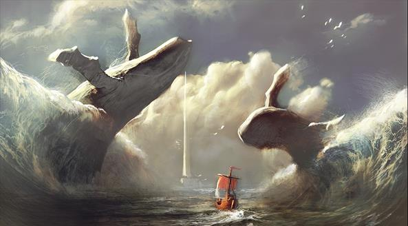

Đáp lại công ơn của những người Argonautes, Phinée tiên báo cho họ biết một điều vô cùng quý báu:
- Hỡi những vị khách quý, những thủy thủ anh hùng của đất nước Hy Lạp thần thánh! Ta vô cùng biết ơn các người đã cứu ta thoát khỏi cái tai họa mà ta cầm chắc là chỉ có đến khi ta nhắm mắt xuôi tay thì mới qua khỏi. Sớm mai các người sẽ lên đường tiếp tục cuộc hành trình vĩ đại sang phương Đông. Ta đã quá nghèo đến mức không còn gì để trao tặng các ân nhân của ta để tỏ lòng tri ân và hiếu khách, tuy nhiên sự hiểu biết của ta chắc chắn còn quý giá gấp bội những tặng vật bằng đồng đỏ rực hay bằng vàng sáng chói. Ta chắc nó sẽ giúp ích các người không nhỏ trong cuộc hành trình.
Hỡi những người Argonautes! Rồi đây trên đường đi các người sẽ gặp hai hòn núi đá xanh lơ. Đó là hai quả núi khá to vừa ngầm vừa nổi lại luôn luôn chuyển động. Người ta quen gọi những là hai hòn Cyanées bởi vì màu xanh của chúng nhẹ phơn phớt như nền trời thu trong vắt không gợn một áng mây. Lại còn có tên gọi chúng là hai hòn Symplégades bởi vì chúng thường rình đón có con thuyền nào đi lách vào giữa thì lập tức chúng đổ xô tới, nghiền bẹp. Sau đó chúng lại chuyển động về chỗ cũ, trả lại yên tĩnh cho mặt biển dường như không có chuyện gì xảy ra.
Hỡi những thủy thủ anh hùng của con thuyền Argo! Ta không biết Số mệnh có cho phép con thuyền của các người đi thoát qua cái cửa tử này không. Nhưng ta biết cách để tìm hiểu ý định của Số mệnh, và đây các người hãy ghi nhớ lấy. Các người hãy đem theo một con chim bồ câu và khi con thuyền tới sát hai hòn Symplégades thì các người lập tức thả ngay con chim ra. Chim sẽ bay thẳng vào quãng biển giữa chúng. Nếu như con chim bay lọt qua vô sự thì con thuyền của các người cũng lọt qua vô sự như chim. Nhưng nếu nó bị nghiền bẹp thì các người hãy từ bỏ ý định của mình. Các người phải tìm một con đường khác hoặc làm lễ hiến tế thần linh cầu xin những lời chỉ dẫn...
Cụ già Phinée nói thế và những người thủy thủ của con thuyền Argo ghi nhớ kỹ lời cụ nói trong lòng. Họ cúi đầu bày tỏ lòng cảm tạ của mình đồng thời cũng là lời chào từ biệt cụ.
Con thuyền Argo lại ra đi.Chẳng bao lâu đã tới Symplégades. Từ xa nhìn thấy hai quả núi lớn chuyển động lại gần nhau rồi va vào nhau, sau đó lại giãn ra rồi lại chuyển động va vào nhau... Thật kinh hồn. Nước biển khi dồn lại, dâng lên cao ngút rồi đổ sập xuống mạnh tưởng chừng như thần Zeus nổi cơn thịnh nộ giáng sấm sét. Còn khi hai quả núi giãn ra thì nước bị hút xuống xoay xoáy như có bàn tay một người phụ nữ nào đang xay bột quay chiếc cối. Con thuyền đã đến ngay trước quãng biển nhỏ hẹp trước Symplégades. Jason ra lệnh cho con thuyền đừng lại. Theo lời chỉ dẫn của Phinée, chàng dừng trước mũi thuyền cầu khấn thần linh rồi thả con chim bồ câu. Con chim vỗ cánh bay đi và phút chốc đã bay vào khoảng không gian giữa hai quả núi. Ôi hồi hộp quá! Con chim có bay thoát hay không? Các vị anh hùng Hy Lạp đều căng mắt ra dõi nhìn theo cánh chim bay, bồn chồn, lo lắng. Hai hòn núi đã chuyển động và mỗi lúc chuyển động một mạnh hơn. Con chim vẫn bay. Hai hòn núi đã tới gần nhau rồi, gần nhau lắm rồi... chỉ còn... và rầm một cái! Chúng xô vào nhau. Mọi người nhắm mắt lại sợ hãi. Nhưng kìa, cánh chim đang vẫy ở nơi kia. Thật là hú vía! Nó thoát nạn. Chiếc lông đuôi dài và đẹp của nó bị Symplégades nghiến rụng. Chậm một tí nữa là chết như chơi.
Khi hai hòn núi đã giãn ra và chuyển động lui về chỗ cũ thì con thuyền Argo liền vươn chèo rẽ sóng phóng đi. Những thủy thủ Argonautes chèo như cúi rạp người xuống. Con thuyền Argo đi lọt vào giữa hai hòn Symplégades, hai hòn núi đá vừa lui về chỗ cũ nay lại chuyển động tiến đến gần nhau. Mọi người đều biết rằng số phận của mình tùy thuộc vào đôi cánh tay đang chèo của mình. Hai hòn núi đá cứ lừng lững, lừng lững tiến tới gần con thuyền. Con thuyền bị sóng từ hai phía dồn vào nâng bổng lên, tròng trành, nghiêng ngả, nhưng những người thủy thủ anh hùng không hề nao núng. Họ vẫn bình tĩnh nhìn thẳng phía trước ráng sức chèo. Hai hòn núi càng áp sát đến gần thì con thuyền càng gặp nhiều khó khăn. Mọi người suy nghĩ về số phận con chim bồ câu để tìm hiểu quyết định của Số mệnh. Con chim bị rụng mất chút lông đuôi nhưng vẫn bay được vì nhờ đôi cánh. Nhưng còn con thuyền của họ nếu bị vỡ, bị hỏng đuôi thuyền thì làm sao có thể đi tiếp được? Thuyền sẽ chìm và họ sẽ gửi thân nơi đáy biển.

Hai hòn núi đá đang ép con thuyền. Con thuyền dốc sức lao đi. Anh em thủy thủ hò nhau dốc hết sức lực vào tay chèo, bởi vì lúc này chỉ ngừng một tay chèo, chỉ một tay chèo thôi thì con thuyền khó bề thoát nạn. Sự cố gắng của những người thủy thủ anh hùng đã không vô ích. Con thuyền vươn được mũi ra ngoài, rồi cả thân nữa, và cuối cùng: chiến thắng! Tuy nhiên Số mệnh đã tiên báo qua số phận của con chim bồ câu. Con thuyền vươn ra khỏi vòng nguy hiểm thì cũng là lúc hai hòn núi đá va vào nhau, và cũng như con chim bồ câu, đuôi con thuyền bị Symplégades quệt phải cho nên bị hư hại nhẹ! Nghe đâu cái bánh lái bị gãy. Có người kể vào lúc hai hòn núi đá sắp nghiến bẹp con thuyền thì nữ thần Athéna xuất hiện. Nữ thần đứng giữa hai hòn núi đá, một tay đưa ra chặn đứng một hòn núi đang chuyển động lại, còn một tay đẩy mạnh vào đuôi con thuyền một cái. Thế là con thuyền Argo bay vút đi như một mũi tên, và chính nhờ có sự can thiệp này mà con thuyền chỉ bị hư hại nhẹ.
Kể từ ngày con thuyền Argo qua được hai hòn Symplégades, mọi thuyền bè qua vùng đó không phải lo âu, sợ hãi nữa. Số mệnh đã ước định rằng nếu có một con thuyền nào qua được Symplégades thì từ đó Symplégades sẽ thôi không chuyển động nữa. Chân chúng bị chôn chặt xuống đáy biển sâu. Symplégades tiếng Hy Lạp nghĩa là: “Va chạm, xô vào nhau”. Người xưa cho rằng Symplégades nằm trên quãng biển đi vào Pont-Euxin.